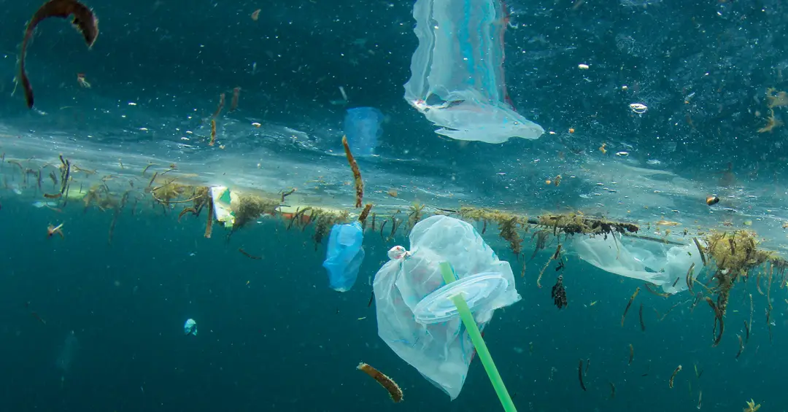
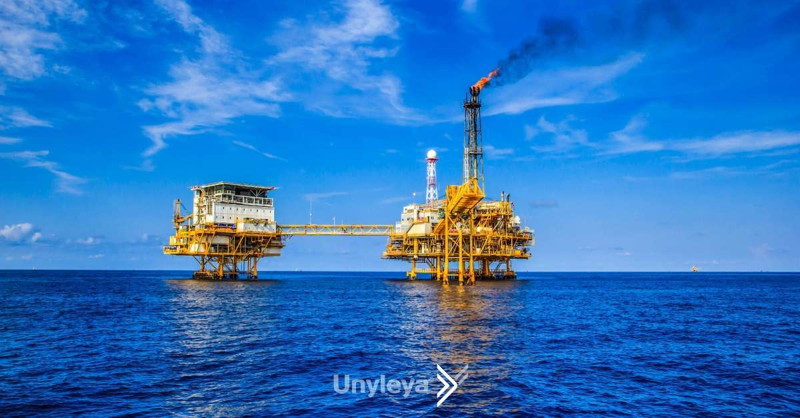
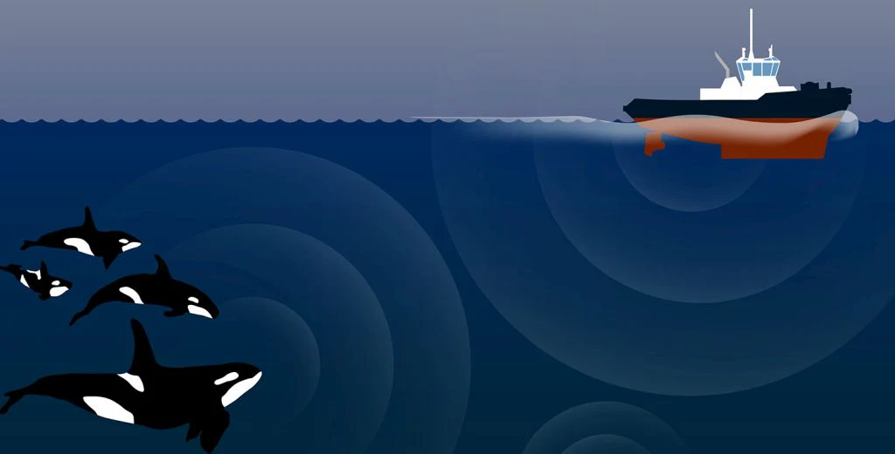
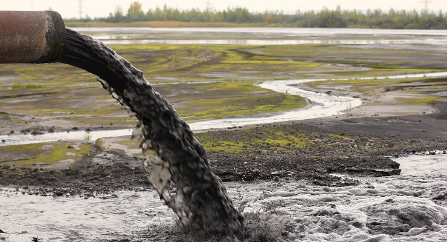

Poluição por Plásticos e Microplásticos
O impacto desta tecnologia (química de polímeros) é devastador devido à sua durabilidade. O
macroplástico, como redes de pesca abandonadas ("redes fantasmas"), sacolas e embalagens, causa
danos físicos diretos por emaranhamento, levando ao afogamento de mamíferos marinhos, tartarugas e
aves. Além disso, a ingestão de pedaços de plástico por animais maiores causa bloqueios intestinais
e uma falsa sensação de saciedade, levando à inanição. O problema mais difuso, no entanto, vem dos
microplásticos: à medida que o plástico maior se degrada pela luz solar (fotodegradação) e ação das
ondas, ele se fragmenta em milhões de partículas minúsculas que são ingeridas pelo zooplâncton, a
base de toda a cadeia alimentar marinha. Esses plásticos também atuam como vetores químicos,
absorvendo e concentrando toxinas (como pesticidas) da água, que são então liberadas dentro dos
organismos, bioacumulando-se em níveis perigosos nos predadores.

Exploração de Petróleo e Gás Offshore
O maior risco dessa tecnologia é o potencial para vazamentos catastróficos, como o desastre da
Deepwater Horizon, que liberam milhões de barris de petróleo cru. Esse tipo de poluição aguda
devasta ecossistemas inteiros: o óleo sufoca aves marinhas e mamíferos, envenena larvas de peixes na
coluna d'água e contamina habitats costeiros vitais, como manguezais e pântanos salgados, por
décadas. Além dos acidentes, existe a poluição crônica: as operações de perfuração rotineiras
liberam "fluidos de perfuração" e "água produzida", que são misturas tóxicas de hidrocarburetos,
metais pesados e produtos químicos de processo, contaminando o sedimento e a água ao redor das
plataformas. A própria infraestrutura, incluindo quilômetros de oleodutos, também fragmenta
fisicamente os habitats sensíveis do leito marinho.

Poluição Sonora (Sonares e Prospecção Sísmica)
No ambiente marinho, onde a visibilidade é limitada, o som é o sentido primário para a maioria dos
animais, usado para comunicação, navegação (ecolocalização), caça e detecção de predadores. A
tecnologia humana introduziu um ruído cacofônico que interfere em todos esses processos. O ruído de
baixa frequência e contínuo dos motores de grandes navios (tráfego marítimo) cria um "smog acústico"
que mascara os chamados das baleias, forçando-as a "gritar" e aumentando seus níveis de estresse. O
impacto mais agudo vem de tecnologias como sonares navais de alta potência e, principalmente, dos
canhões de ar sísmicos usados na prospecção de petróleo e gás. Esses canhões disparam explosões
sonoras de intensidade extrema a cada 10-15 segundos, 24 horas por dia, que podem causar danos
auditivos permanentes em mamíferos marinhos, interromper comportamentos vitais de alimentação e
reprodução, e têm sido diretamente ligados a encalhes em massa.

Poluição Química Industrial e Agrícola
Tecnologias desenvolvidas em terra têm impactos diretos no mar através do escoamento. O escoamento
agrícola transporta o excesso de fertilizantes (nitrogênio e fósforo) para os rios e costas; esses
nutrientes causam a eutrofização, um crescimento explosivo de algas. Quando essas algas morrem e se
decompõem, as bactérias consomem todo o oxigênio da água, criando "zonas mortas" (áreas de hipóxia)
do tamanho de países, onde a maioria da vida marinha não pode sobreviver. Paralelamente, efluentes
industriais e pesticidas agrícolas liberam metais pesados (como mercúrio) e Poluentes Orgânicos
Persistentes (POPs). Essas substâncias tóxicas não se degradam facilmente, entrando na cadeia
alimentar, bioacumulando-se nos tecidos gordurosos dos animais e biomagnificando-se, atingindo
concentrações letais em predadores de topo e causando falhas reprodutivas e danos neurológicos.